Git - GitHub - VSCode errors messages Git - GitHub - VSCode mensagens de erro Git - GitHub - VSCode mensajes de error
Git: gpg: skipped <email>: No Secret Key
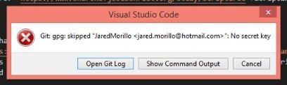
This has to do with how Git is configured with GPG signing process. This is an issue on Windows computers, as the GPG implementation is weird. Isso está relacionado à forma como o Git está configurado com o processo de assinatura GPG. Este é um problema em computadores Windows, pois a implementação do GPG é estranha. Esto tiene que ver con la forma en que Git está configurado con el proceso de firma GPG. Este es un problema en computadoras Windows, ya que la implementación de GPG es peculiar.
There are a few potential ways to fix this issue. I would recommend turning off the signing with GPG. Há algumas maneiras de corrigir este problema. Recomendo desativar a assinatura com GPG. Hay algunas formas de corregir este problema. Se recomienda desactivar la firma con GPG.
Here are the steps to disable this option Aqui estão os passos para desativar esta opção Aquí están los pasos para desactivar esta opción
Go to VSCode preferences - Settings Vá para VSCode Preferences - Settings Vaya a VSCode Preferences - Settings
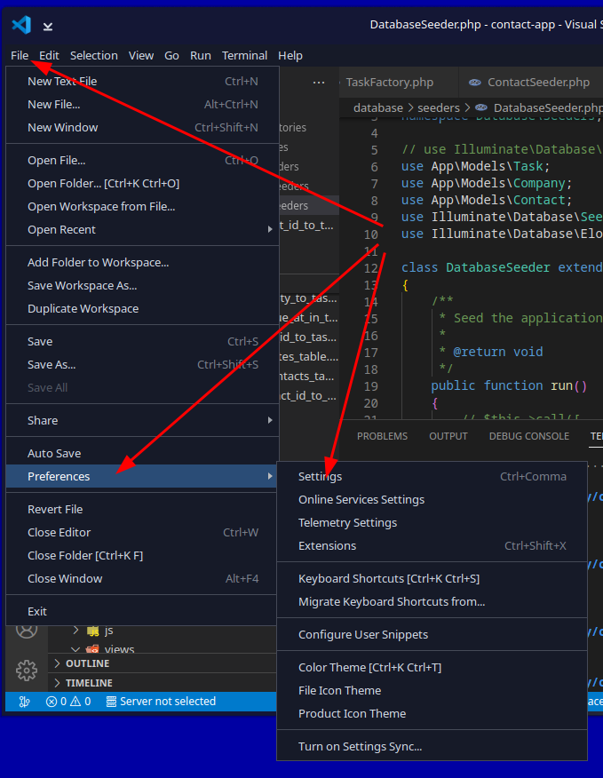
Type this into the search bar at the top to find the setting: gpg commit Digite isso na barra de pesquisa no topo para encontrar a configuração: gpg commit Escriba esto en la barra de búsqueda en la parte superior para encontrar la configuración: gpg commit
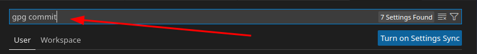
Make sure this option is not checked. This is the option that tells VSCode to use PGP while pushing to GitHub: Enables commit signing with GPG or X.509 Certifique-se de que esta opção não está marcada. Esta é a opção que diz ao VSCode para usar PGP ao fazer push para o GitHub: Enables commit signing with GPG or X.509 Asegúrese de que esta opción no esté marcada. Esta es la opción que le indica a VSCode que use PGP al hacer push a GitHub: Enables commit signing with GPG or X.509
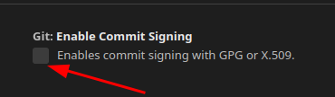
Close out of the Settings tab. Feche a aba Settings. Cierre la pestaña Settings.
Back to Top Voltar ao Topo Volver arribaYou don't have permission to push to <GitHub Account> on GitHub Você não tem permissão para push na <Conta GitHub> no GitHub No tiene permiso para hacer push a <Cuenta GitHub> en GitHub
This error occurs when you have GitHub setup on one account and you try to use another account and GitHub auto logs you into the old account with VSCode. This process is using the Windows Credential Manager. Este erro ocorre quando você tem o GitHub configurado em uma conta e tenta usar outra conta, e o GitHub faz login automático na conta antiga com VSCode. Este processo usa o Windows Credential Manager. Este error ocurre cuando tiene GitHub configurado en una cuenta e intenta usar otra, y GitHub inicia sesión automáticamente en la cuenta antigua con VSCode. Este proceso usa el Windows Credential Manager.
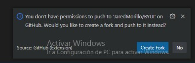
This error is because Git was previously configured for another user account on the computer using the global settings. There are a a few solutions. Este erro ocorre porque o Git foi configurado anteriormente para outra conta de usuário no computador usando as configurações globais. Há algumas soluções. Este error se debe a que Git fue configurado anteriormente para otra cuenta de usuario en la computadora usando la configuración global. Hay algunas soluciones.
Remove Windows Credential Manager from auto logging into GitHub Remover o Windows Credential Manager do login automático no GitHub Eliminar el Windows Credential Manager del inicio de sesión automático en GitHub
This is the preferred method if the account in question is not being used anymore Este é o método preferido se a conta em questão não está mais sendo usada Este es el método preferido si la cuenta en cuestión ya no se está usando
There are two part to this. If you only do one of them it will work. It is recommended to do both parts. Há duas partes nisso. Se você fizer apenas uma delas, vai funcionar. É recomendado fazer as duas partes. Este proceso tiene dos partes. Si solo hace una de ellas funcionará. Se recomienda hacer ambas partes.
Go to GitHub and log into the old account and click on the user profile picture in the top right of the web page. Acesse o GitHub e faça login na conta antiga e clique na foto de perfil do usuário no canto superior direito da página. Vaya a GitHub e inicie sesión en la cuenta antigua y haga clic en la foto de perfil en la esquina superior derecha de la página.
On the left navigation menu, select No menu de navegação à esquerda, selecione En el menú de navegación izquierdo, seleccione
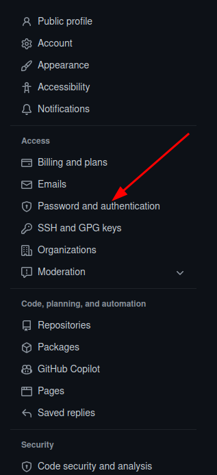
Then click on the tab Em seguida, clique na aba Luego haga clic en la pestaña
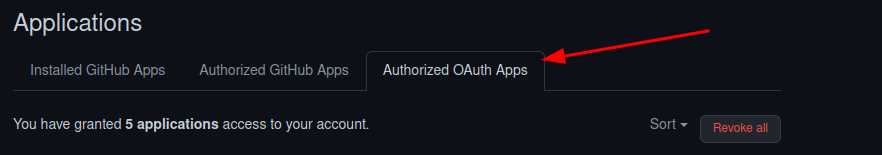
Find the GitHub for VSCode line Encontre a linha GitHub for VSCode Encuentre la línea GitHub for VSCode
Click on the to the left of GitHub for VSCode Clique nos à esquerda de GitHub for VSCode Haga clic en los a la izquierda de GitHub for VSCode
Click the option Clique na opção Haga clic en la opción
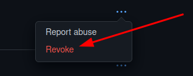
This will force VSCode to re-authenticate with GitHub. Isso forçará o VSCode a se autenticar novamente com o GitHub. Esto obligará a VSCode a volver a autenticarse con GitHub.
Part two of this process is to go into Windows Credential Manager and remove the github.com auto login credentials. A segunda parte deste processo é acessar o Windows Credential Manager e remover as credenciais de login automático do github.com. La segunda parte de este proceso es ir al Windows Credential Manager y eliminar las credenciales de inicio de sesión automático de github.com.
Click the start menu button and type "Windows Credential" and you will see the link to this appear in the start menu. Click on that link and you will see something like this Clique no botão do menu Iniciar e digite "Windows Credential" e você verá o link aparecer no menu. Clique nesse link e você verá algo assim Haga clic en el botón del menú Inicio y escriba "Windows Credential" y verá el enlace aparecer en el menú. Haga clic en ese enlace y verá algo como esto
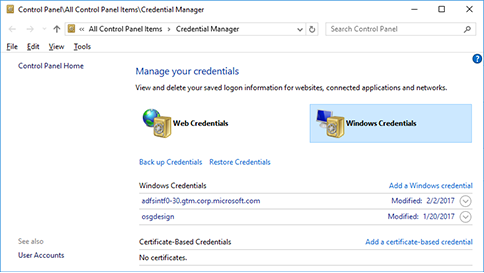
Find the entry for github.com, then click on the arrow button on the right side then select the option REMOVE. This will remove that from Windows Credential Manager. Encontre a entrada para github.com, clique no botão de seta no lado direito e selecione a opção REMOVE. Isso removerá do Windows Credential Manager. Encuentre la entrada para github.com, haga clic en el botón de flecha del lado derecho y seleccione la opción REMOVE. Esto eliminará esa entrada del Windows Credential Manager.
The next set is to logout of the user account in VSCode. You do that by clicking on the PRofiles icon and then highlight the name and then clicking on Sign Out for that user. O próximo passo é fazer logout da conta de usuário no VSCode. Você faz isso clicando no ícone de Profiles, destacando o nome e clicando em Sign Out para aquele usuário. El siguiente paso es cerrar sesión de la cuenta de usuario en VSCode. Para hacerlo, haga clic en el ícono de Profiles, resalte el nombre y haga clic en Sign Out para ese usuario.
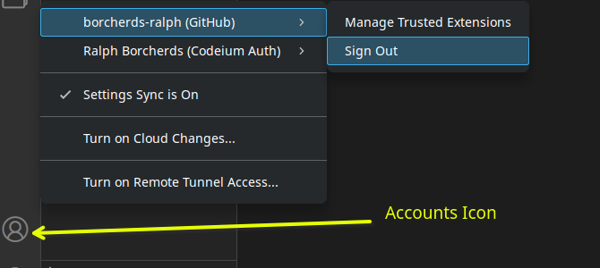
Restart VSCode and then try and publish the repository again. Reinicie o VSCode e tente publicar o repository novamente. Reinicie VSCode y luego intente publicar el repository nuevamente.
This occurs when Git is installed and told to use the Windows Credential Manager and not the Git Credential Manager Core option which is the new default. It may be worth reinstalling Git and make sure that the Git Credential Manager Core option is selected as in this image. Isso ocorre quando o Git é instalado e configurado para usar o Windows Credential Manager em vez do Git Credential Manager Core, que é o novo padrão. Pode valer reinstalar o Git e garantir que a opção Git Credential Manager Core esteja selecionada como nesta imagem. Esto ocurre cuando Git se instala y se configura para usar el Windows Credential Manager en lugar del Git Credential Manager Core, que es el nuevo valor predeterminado. Puede valer la pena reinstalar Git y asegurarse de que la opción Git Credential Manager Core esté seleccionada como en esta imagen.
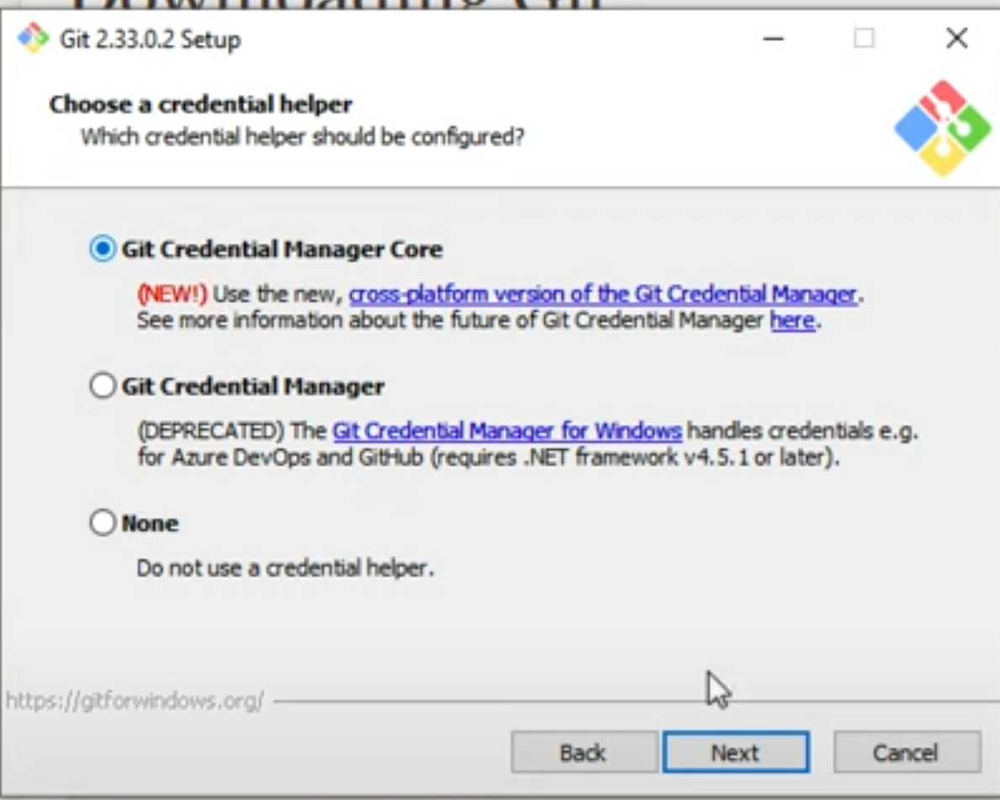
GitHub Pages does not initialize GitHub Pages não inicializa GitHub Pages no se inicializa
There is an issue where the GitHub pages do not initialize the first time. This means you must re-initialize a push to GitHub and then recreate the pages setup. Há um problema em que as GitHub pages não inicializam na primeira vez. Isso significa que você deve reinicializar um push para o GitHub e depois recriar a configuração das pages. Hay un problema en que las GitHub Pages no se inicializan la primera vez. Esto significa que debe reinicializar un push a GitHub y luego recrear la configuración de pages.
-
Go to the pages setup page and change the branch to NONE Vá para a página de configuração das pages e altere o branch para NONE Vaya a la página de configuración de pages y cambie el branch a NONE
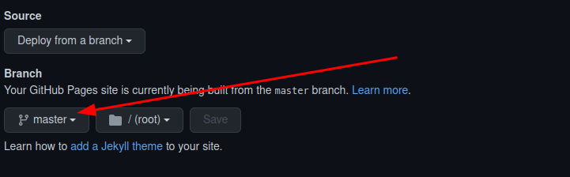
Click Save Clique em Save Haga clic en Save
-
Go to VSCode and push to GitHub Vá para o VSCode e faça push para o GitHub Vaya a VSCode y haga push a GitHub
You can do an empty push by typing the following commands in the command prompt Você pode fazer um push vazio digitando os seguintes comandos no terminal Puede hacer un push vacío escribiendo los siguientes comandos en el símbolo del sistema
git commit --allow-empty -m "Trigger rebuild"
git push -
Go back to GitHub Pages and recreate the pages setup. Volte ao GitHub Pages e recrie a configuração das pages. Vuelva a GitHub Pages y recree la configuración de pages.
Once you have clicked save on the pages setup, click on the tab Depois de clicar em save na configuração das pages, clique na aba Una vez que haya hecho clic en save en la configuración de pages, haga clic en la pestaña
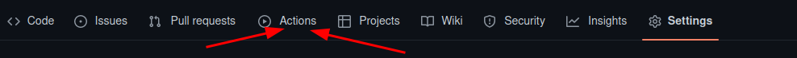
Watch the top entry until the icon to the left turns blue or green with a check mark. That means it is complete. The red circle with an X means that it failed. Observe a entrada do topo até que o ícone à esquerda fique azul ou verde com uma marca de verificação. Isso significa que está completo. O círculo vermelho com um X significa que falhou. Observe la entrada superior hasta que el ícono de la izquierda se vuelva azul o verde con una marca de verificación. Eso significa que está completo. El círculo rojo con una X significa que falló.
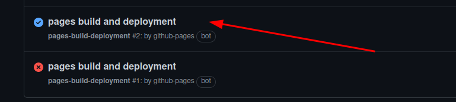
You will notice that the process will take longer than 1 minute. This is due to some change GitHub has made on the server due to new features that are being added. Even publishing the push/sync from VSCode takes as long as 5 min on very busy days. Você notará que o processo levará mais de 1 minuto. Isso se deve a algumas mudanças que o GitHub fez no servidor por causa de novos recursos sendo adicionados. Mesmo o push/sync do VSCode pode levar até 5 minutos em dias muito movimentados. Notará que el proceso tardará más de 1 minuto. Esto se debe a algunos cambios que GitHub ha realizado en el servidor por nuevas funciones que se están agregando. Incluso el push/sync desde VSCode puede tardar hasta 5 minutos en días muy ocupados.
If the user gets a failed again, check the spelling of the folders and file names. This process seems to fail if the user has spaces in the folder and filenames and sometimes if there are underscores in these names. Se o erro ocorrer novamente, verifique a ortografia das pastas e nomes de arquivos. Este processo parece falhar se o usuário tiver espaços nas pastas e nomes de arquivos, e às vezes se houver sublinhados nesses nomes. Si el error vuelve a ocurrir, verifique la ortografía de las carpetas y nombres de archivos. Este proceso parece fallar si el usuario tiene espacios en las carpetas y nombres de archivos, y a veces si hay guiones bajos en esos nombres.
Make sure to configure your 'user.name' and 'user.email' in git Certifique-se de configurar seu 'user.name' e 'user.email' no git Asegúrese de configurar su 'user.name' y 'user.email' en git
If the user gets this error, they missed that step in the configuration of Git. It is found in the installation steps of Git for Windows. Se o usuário receber este erro, ele pulou aquela etapa na configuração do Git. Ela é encontrada nas etapas de instalação do Git para Windows. Si el usuario recibe este error, omitió ese paso en la configuración de Git. Se encuentra en los pasos de instalación de Git para Windows.
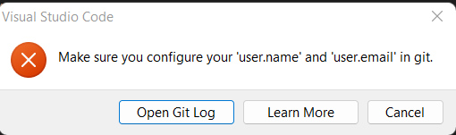
Open the terminal or command prompt. This can be the one inside VSCode Abra o terminal ou prompt de comando. Pode ser o terminal dentro do VSCode Abra el terminal o símbolo del sistema. Puede ser el que está dentro de VSCode
Type each of these commands into the command prompt/Terminal window Digite cada um desses comandos na janela do terminal Escriba cada uno de estos comandos en la ventana del terminal
git config −global user.name 'github user name'
git config −global user.email 'email address used on github'
git config --global core.ignorecase false
Try to push to GitHub Tente fazer push para o GitHub Intente hacer push a GitHub
If you still have issues, then contact someone for help Se ainda tiver problemas, entre em contato com alguém para obter ajuda Si aún tiene problemas, comuníquese con alguien para obtener ayuda
Back to Top Voltar ao Topo Volver arribaVSCode push/sync to GitHub seems to hang and not do anything O push/sync do VSCode para o GitHub parece travar e não fazer nada El push/sync de VSCode a GitHub parece congelarse y no hacer nada
There are a few reasons as to why this will occur. There are a couple of things to try. Há algumas razões pelas quais isso ocorre. Há algumas coisas a tentar. Hay algunas razones por las que esto ocurre. Hay algunas cosas que puede intentar.
-
Open a terminal/command window and try to push to GitHub using the command line Abra uma janela de terminal e tente fazer push para o GitHub usando a linha de comando Abra una ventana de terminal y trate de hacer push a GitHub usando la línea de comandos
git push
You may get an error that says something like this (It will look different on the various OS's): Você pode receber um erro que diz algo assim (vai ter aparência diferente nos vários sistemas operacionais): Puede recibir un error que diga algo como esto (tendrá un aspecto diferente en los distintos sistemas operativos):
There is no tracking information for the current branch.
Please specify which branch you want to merge with.
See git-pull(1) for details
git push <remote> <branch>
If you wish to set tracking information for this branch you can do so with:
git push --set-upstream origin masterIf you get that error at the command line type in the command Se você receber esse erro na linha de comando, digite o comando Si recibe ese error en la línea de comandos, escriba el comando
git push −set-upstream origin master
Then do a git push command Depois execute o comando git push Luego ejecute el comando git push
You may be prompted to authenticate with GitHub again. Você pode ser solicitado a se autenticar com o GitHub novamente. Es posible que se le solicite autenticarse con GitHub nuevamente.
Once the push/sync is complete, you will need to restart VSCode and the GitHub controls within VSCode should work again. Quando o push/sync estiver concluído, você precisará reiniciar o VSCode e os controles do GitHub dentro do VSCode devem funcionar novamente. Una vez que el push/sync esté completo, deberá reiniciar VSCode y los controles de GitHub dentro de VSCode deberían funcionar nuevamente.
- The other reasons why this process will hang are too numerous and hard to give instructions on how to overcome in this document. This will require more research with debug logs to see if there is a reason for the hang. As outras razões pelas quais esse processo trava são numerosas demais para fornecer instruções neste documento. Isso exigirá mais pesquisa com logs de debug para descobrir a causa do travamento. Las otras razones por las que este proceso se congela son demasiado numerosas para dar instrucciones en este documento. Esto requerirá más investigación con registros de depuración para ver si hay una razón para el bloqueo.
Windows Error message: App or process blocked: git.exe Mensagem de erro do Windows: App ou processo bloqueado: git.exe Mensaje de error de Windows: App o proceso bloqueado: git.exe
User is trying to run git commands at the command prompt and Windows is displaying the following Windows System error O usuário está tentando executar comandos git no prompt de comando e o Windows está exibindo o seguinte erro de sistema El usuario está intentando ejecutar comandos git en el símbolo del sistema y Windows está mostrando el siguiente error del sistema
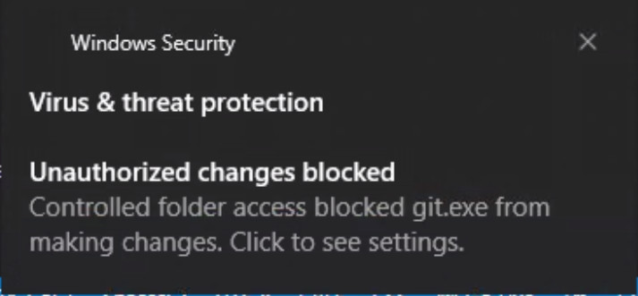
The instructions to fix this are specific to the version of Windows that is being run. Here are the basic steps: As instruções para corrigir isso são específicas para a versão do Windows em execução. Aqui estão os passos básicos: Las instrucciones para solucionar esto son específicas de la versión de Windows que se está ejecutando. Aquí están los pasos básicos: (Solo en inglés) https://support.microsoft.com/en-us/windows/allow-an-app-to-access-controlled-folders-b5b6627a-b008-2ca2-7931-7e51e912b034
Use controlled folder access Usar acesso controlado a pastas Usar acceso controlado a carpetas
Controlled folder access in Windows Security reviews the apps that can make changes to files in protected folders and block unauthorized or unsafe apps from accessing or changing files in those folders. O acesso controlado a pastas no Windows Security analisa os apps que podem fazer alterações em arquivos em pastas protegidas e bloqueia apps não autorizados ou inseguros de acessar ou alterar arquivos nessas pastas. El acceso controlado a carpetas en Windows Security revisa las aplicaciones que pueden hacer cambios en archivos de carpetas protegidas y bloquea las aplicaciones no autorizadas o inseguras para que no accedan ni cambien archivos en esas carpetas.
- Select Start > Settings > Update & Security > Windows Security > Virus & threat protection. Selecione Start > Settings > Update & Security > Windows Security > Virus & threat protection. Seleccione Start > Settings > Update & Security > Windows Security > Virus & threat protection.
- Under Virus & threat protection settings, select Manage settings. Em configurações de Virus & threat protection, selecione Manage settings. En la configuración de Virus & threat protection, seleccione Manage settings.
- Under Controlled folder access, select Manage Controlled folder access. Em Controlled folder access, selecione Manage Controlled folder access. En Controlled folder access, seleccione Manage Controlled folder access.
- Switch the Controlled folder access setting to On or Off. Alterne a configuração de Controlled folder access para On ou Off. Cambie la configuración de Controlled folder access a On u Off.
There is an option to allow just one program to run in this Controlled Folder Access and you can select git.exe from the recently blocked programs. Há uma opção para permitir que apenas um programa seja executado neste Controlled Folder Access e você pode selecionar git.exe nos programas bloqueados recentemente. Hay una opción para permitir que solo un programa se ejecute en este Controlled Folder Access y puede seleccionar git.exe de los programas bloqueados recientemente.
If you look at the Windows Notifications, you may see an error like this. Se você verificar as Notificações do Windows, pode ver um erro assim. Si revisa las Notificaciones de Windows, puede ver un error como este.
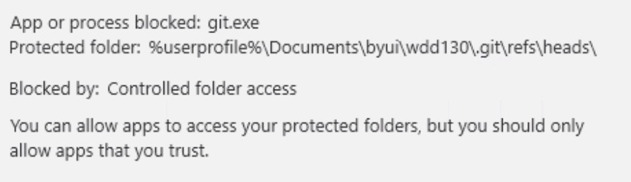
This is the same step as above for the same error. Microsoft has a few diverse ways to present this message. It will also be logged in to the System Logs. Este é o mesmo passo acima para o mesmo erro. A Microsoft tem algumas formas diferentes de apresentar esta mensagem. Ela também será registrada nos Logs do Sistema. Este es el mismo paso de arriba para el mismo error. Microsoft tiene varias formas diferentes de presentar este mensaje. También se registrará en los Registros del Sistema.
Back to Top Voltar ao Topo Volver arribagit RPC fail: curl 18 transfer closed with outstanding read data remaining
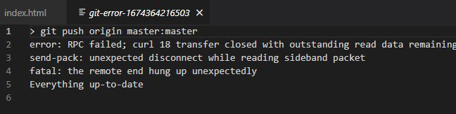
A few reasons I have seen this curl 18 error: Algumas razões que já vi para este erro curl 18: Algunas razones que he visto para este error curl 18:
- Too many files - This is usually related to #3 Muitos arquivos - Geralmente relacionado ao item #3 Demasiados archivos - Generalmente relacionado con el punto #3
- Anti-virus software Software antivírus Software antivirus
- Number of files and sizes exceeds the buffer size for git. See this article: O número de arquivos e tamanhos excede o buffer do git. Veja este artigo (somente em inglês): El número de archivos y tamaños excede el tamaño del buffer de git. Vea este artículo: (Solo en inglés) https://9to5answer.com/git-push-gives-error-rpc-failed-curl-18-transfer-closed-with-outstanding-read-data-remaining
- Speed of internet can also cause this issue. A velocidade da internet também pode causar este problema. La velocidad de internet también puede causar este problema. https://debugah.com/git-clone-error-rpc-failed-curl-18-transfer-closed-with-outstanding-read-data-remaining-18415/
- Running Homebrew on a MAC or Linux machine. There are known issues at times with this error in Homebrew. Homebrew is not supported for students and they will have to find the answers on their own as Homebrew has its own command structure to work with Git & GitHub. Usar Homebrew em um MAC ou Linux. Há problemas conhecidos com este erro no Homebrew. O Homebrew não é suportado para alunos e eles terão que encontrar as respostas por conta própria, pois o Homebrew tem sua própria estrutura de comandos para trabalhar com Git e GitHub. Usar Homebrew en una MAC o Linux. Hay problemas conocidos a veces con este error en Homebrew. Homebrew no es compatible con los estudiantes y tendrán que encontrar las respuestas por su cuenta, ya que Homebrew tiene su propia estructura de comandos para trabajar con Git y GitHub.
git RPC failed; curl 92 HTTP/2 stream 0 was not closed cleanly: CANCEL (err 8)
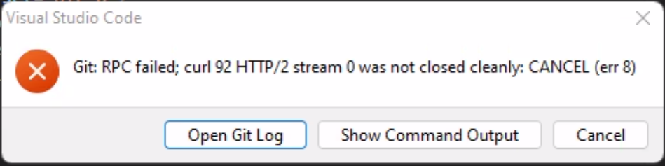
This error has to do with the amount of data being sent to GitHub. On bad internet connections, you can only send enough data that GitHub will keep the connection open. Bad internet connections will drop with this error. There are other reasons this error can occur, but this is the only reason for this error with the data we use. Este erro está relacionado à quantidade de dados enviados ao GitHub. Em conexões de internet ruins, você só pode enviar dados suficientes para o GitHub manter a conexão aberta. Conexões ruins de internet vão cair com este erro. Há outras razões para este erro, mas esta é a única razão para este erro com os dados que usamos. Este error tiene que ver con la cantidad de datos que se envían a GitHub. Con conexiones de internet deficientes, solo puede enviar suficientes datos para que GitHub mantenga la conexión abierta. Las conexiones de internet deficientes se caerán con este error. Hay otras razones por las que puede ocurrir este error, pero esta es la única razón para este error con los datos que usamos.
Back to Top Voltar ao Topo Volver arribaGit does not allow you to add a folder to the repo Git não permite adicionar uma pasta ao repo Git no permite agregar una carpeta al repo
If you type the git add <foldername> and get an error that looks like this Se você digitar git add <foldername> e receber um erro parecido com este Si escribe git add <foldername> y recibe un error como este
Git Error - 'main/' does not have a commit checked out
The issue is most likely that the folder has been initialized as a git repository. Go into that folder and look for the hidden folder/directory called .git O problema é muito provavelmente que a pasta foi inicializada como um repository git. Entre nessa pasta e procure pela pasta/diretório oculto chamado .git El problema es muy probablemente que la carpeta fue inicializada como un repository git. Entre en esa carpeta y busque la carpeta/directorio oculto llamado .git
Remove the .git folder in the sub-directory Remova a pasta .git no subdiretório Elimine la carpeta .git en el subdirectorio
Back to Top Voltar ao Topo Volver arribaError: Failed to push some refs to… Erro: Failed to push some refs to… Error: Failed to push some refs to…
Updates were rejected because the tip of your current branch is behind its remote counterpart. Integrate the remote change (e.g. 'git pull …') before pushing again. As atualizações foram rejeitadas porque o topo do seu branch atual está atrás do seu equivalente remoto. Integre a mudança remota (ex.: 'git pull …') antes de fazer push novamente. Las actualizaciones fueron rechazadas porque la punta de su branch actual está detrás de su contraparte remota. Integre el cambio remoto (ej.: 'git pull …') antes de hacer push nuevamente.

The reason for this error is that the code on GitHub was edited and the user did not issue a git pull command before making any changes to their local machine before they started to edit on the local machine. A razão deste erro é que o código no GitHub foi editado e o usuário não executou um comando git pull antes de fazer alterações na máquina local. La razón de este error es que el código en GitHub fue editado y el usuario no ejecutó un comando git pull antes de hacer cambios en su máquina local.
To fix this error there are a few options. Para corrigir este erro há algumas opções. Para corregir este error hay algunas opciones.
- The first and usually the easiest for those new to Git/GitHub is to recreate the repository. You have to unpublish the site, delete the repository, delete the .git folder on the local and then push back to a Public Repository on GitHub. A primeira e geralmente a mais fácil para iniciantes no Git/GitHub é recriar o repository. Você deve despublicar o site, excluir o repository, excluir a pasta .git local e então fazer push novamente para um Repository público no GitHub. La primera y generalmente la más fácil para los nuevos en Git/GitHub es recrear el repository. Debe cancelar la publicación del sitio, eliminar el repository, eliminar la carpeta .git local y luego hacer push nuevamente a un repository público en GitHub.
-
The preferred way is to stash the changes, pull from the server, merge your stashed changes into the update from the server and then push back to the server. A forma preferida é fazer stash das alterações, pull do servidor, merge das suas alterações em stash com a atualização do servidor e depois fazer push de volta ao servidor. La forma preferida es hacer stash de los cambios, pull del servidor, merge de sus cambios en stash con la actualización del servidor y luego hacer push de vuelta al servidor.
Run these commands: Execute estes comandos: Ejecute estos comandos:
git stash
git pull
git stash pop <− This will apply your saved changes
git commit -m “message”
git push
git stash clear <− This will remove the stashed files from memory. Stashed files stay until removed.
- You can try and issue a 'git push -f' command at the command line and see it will go through. This is still not a guarantee that it will push. Você pode tentar executar o comando 'git push -f' na linha de comando e ver se ele passa. Isso ainda não é garantia de que vai funcionar. Puede intentar ejecutar el comando 'git push -f' en la línea de comandos y ver si pasa. Esto todavía no es una garantía de que se hará el push.
-
You can create a new branch and push to the new branch. You can then go to the fork and use the built in process on GitHub to validate the change in the fork and merge back to the master/main branch. (This is the way most companies do development) Você pode criar um novo branch e fazer push para ele. Depois pode ir ao fork e usar o processo integrado do GitHub para validar a mudança no fork e fazer merge de volta ao branch master/main. (Esta é a forma como a maioria das empresas faz desenvolvimento) Puede crear un nuevo branch y hacer push al nuevo branch. Luego puede ir al fork y usar el proceso integrado en GitHub para validar el cambio en el fork y hacer merge de vuelta al branch master/main. (Esta es la forma en que la mayoría de las empresas hace el desarrollo)
Create a new branch in VSCode Crie um novo branch no VSCode Cree un nuevo branch en VSCode

Give the branch a new name Dê um nome novo ao branch Dé un nombre nuevo al branch

Commit and push the new branch Faça commit e push do novo branch Haga commit y push del nuevo branch

Open GitHub repository Abra o repository no GitHub Abra el repository en GitHub
You should see a message like this Você deve ver uma mensagem assim Debe ver un mensaje como este

Click the Compare & Pull Request button Clique no botão Compare & Pull Request Haga clic en el botón Compare & Pull Request
You will see a screen like this Você verá uma tela assim Verá una pantalla como esta

You can type a comment in box where it says Leave a Comment. Você pode digitar um comentário na caixa onde diz Leave a Comment. Puede escribir un comentario en el cuadro donde dice Leave a Comment.
Click the Create pull request button Clique no botão Create pull request Haga clic en el botón Create pull request
Hopefully you will see this message Esperamos que você veja esta mensagem Con suerte verá este mensaje

If you see a message that state there is a conflict, you will have to fix the conflict using one of the options suggested. Se você ver uma mensagem indicando que há um conflito, você terá que corrigir o conflito usando uma das opções sugeridas. Si ve un mensaje que indica que hay un conflicto, tendrá que resolver el conflicto usando una de las opciones sugeridas.
Once the conflict is resolved and you get this message, click the Merge pull Request button Quando o conflito for resolvido e você receber esta mensagem, clique no botão Merge pull Request Una vez que el conflicto esté resuelto y reciba este mensaje, haga clic en el botón Merge pull Request
You will then be asked to confirm the merge Você será solicitado a confirmar o merge Luego se le pedirá confirmar el merge

Click the Confirm Merge button Clique no botão Confirm Merge Haga clic en el botón Confirm Merge
Once the merge is successful you will see this message. Go ahead and delete the branch by clicking the Delete Branch button Quando o merge for bem-sucedido, você verá esta mensagem. Vá em frente e exclua o branch clicando no botão Delete Branch Una vez que el merge sea exitoso verá este mensaje. Proceda a eliminar el branch haciendo clic en el botón Delete Branch

If you do not delete the branch you will always push to this branch from VSCode by default now. Se você não excluir o branch, sempre fará push para este branch no VSCode por padrão. Si no elimina el branch, siempre hará push a este branch desde VSCode de forma predeterminada.
Go back to VSCode Volte ao VSCode Vuelva a VSCode
change back to the master branch by using the Checkout To option Volte ao branch master usando a opção Checkout To Cambie de vuelta al branch master usando la opción Checkout To

Select the Main/Master branch. Go by the name and not the number. Selecione o branch Main/Master. Use o nome e não o número. Seleccione el branch Main/Master. Guíese por el nombre y no por el número.

To remove the local branch open the command prompt Para remover o branch local, abra o terminal Para eliminar el branch local, abra el símbolo del sistema
Run this git command at the command prompt Execute este comando git no terminal Ejecute este comando git en el símbolo del sistema
git pull −prune
You will see something like this if it works Você verá algo assim se funcionar Verá algo como esto si funciona

git branch −d <branch name>

This screenshot shows what happens if you have not switched to the main/master branch first and the branch has not been fully merged. These entries are denoted with the red dot to the left of the command that was run. Esta captura de tela mostra o que acontece se você não tiver mudado para o branch main/master primeiro e o branch não tiver sido totalmente incorporado. Essas entradas são marcadas com o ponto vermelho à esquerda do comando executado. Esta captura de pantalla muestra lo que sucede si no cambió al branch main/master primero y el branch no ha sido totalmente incorporado. Estas entradas se denotan con el punto rojo a la izquierda del comando ejecutado.
You must CHECKOUT the main/master branch first Você deve fazer CHECKOUT do branch main/master primeiro Debe hacer CHECKOUT del branch main/master primero
You can force the delete by using the -D option. Lowercase −d for the check and uppercase −D to force the delete. Você pode forçar a exclusão usando a opção -D. Minúscula −d para verificar e maiúscula −D para forçar a exclusão. Puede forzar la eliminación usando la opción -D. Minúscula −d para verificar y mayúscula −D para forzar la eliminación.
You should now only have the one branch on your local computer. This is the preferred option for most classes at school. You will have multiple branches if you are working as a group on a single project. Agora você deve ter apenas um branch no seu computador local. Esta é a opção preferida para a maioria das aulas na escola. Você terá múltiplos branches se estiver trabalhando em grupo em um único projeto. Ahora debería tener solo un branch en su computadora local. Esta es la opción preferida para la mayoría de las clases en la escuela. Tendrá múltiples branches si está trabajando en grupo en un solo proyecto.
User is prompted git-credential-manager-core.exe could not be started O usuário recebe o aviso: git-credential-manager-core.exe não pôde ser iniciado El usuario recibe el aviso: git-credential-manager-core.exe no pudo iniciarse
User gets this prompt every time they go to sync with GitHub O usuário recebe este aviso toda vez que tenta fazer sync com o GitHub El usuario recibe este aviso cada vez que intenta hacer sync con GitHub
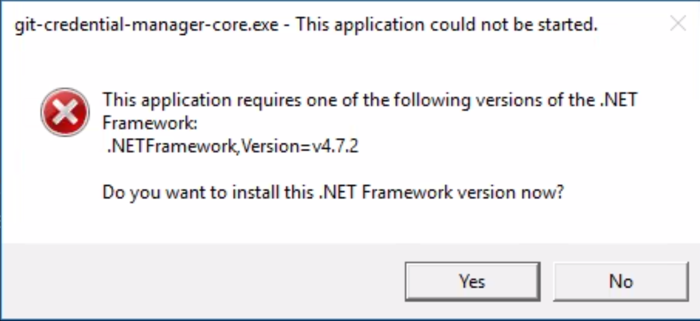
You have to install Microsoft .Net 4.7.2 to get rid of this prompt and to have Git remember your GitHub credentials. Você precisa instalar o Microsoft .Net 4.7.2 para eliminar este aviso e fazer com que o Git lembre suas credenciais do GitHub. Debe instalar Microsoft .Net 4.7.2 para eliminar este aviso y hacer que Git recuerde sus credenciales de GitHub.
If internet connectivity is an issue, then use this URL to go directly to the download page and download the off-line installer. Install the software, reboot the computer and try to sync with Github. Se a conectividade com a internet for um problema, use este URL para ir diretamente à página de download e baixar o instalador off-line. Instale o software, reinicie o computador e tente fazer sync com o Github. Si la conectividad a internet es un problema, use este URL para ir directamente a la página de descarga y descargar el instalador sin conexión. Instale el software, reinicie la computadora e intente hacer sync con Github.
You should not be prompted for this again. If you do then the install did not work correctly. Você não deve ser solicitado para isso novamente. Se acontecer, a instalação não funcionou corretamente. No debería recibir este aviso nuevamente. Si lo recibe, la instalación no funcionó correctamente.
If you get the following message Se você receber a seguinte mensagem Si recibe el siguiente mensaje
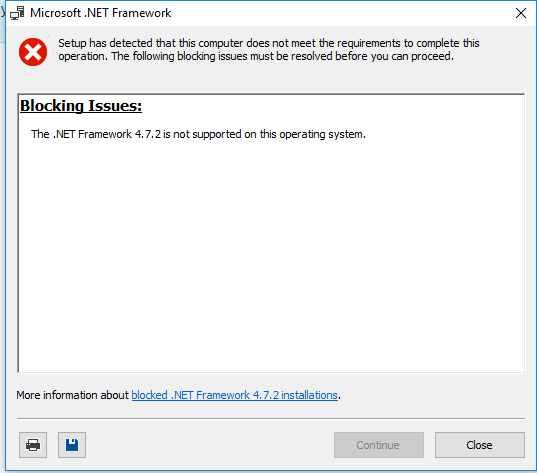
You must update Windows to at least Windows 10 version 1607. You can tell which version you have by going to the About option in the Windows Settings. Você deve atualizar o Windows para pelo menos o Windows 10 versão 1607. Você pode verificar qual versão tem acessando a opção About nas Configurações do Windows. Debe actualizar Windows a al menos Windows 10 versión 1607. Puede saber qué versión tiene yendo a la opción About en la Configuración de Windows.
This post on Microsoft Support site shows you how to find which version of Windows you are running. Esta publicação no site de Suporte da Microsoft mostra como encontrar qual versão do Windows você está executando (somente em inglês). Esta publicación en el sitio de Soporte de Microsoft muestra cómo encontrar qué versión de Windows está ejecutando. (Solo en inglés) Find operating system info in Windows 10
Back to Top Voltar ao Topo Volver arribaMacOS error: xcrun: error: invalid active developer path Erro MacOS: xcrun: error: invalid active developer path Error de MacOS: xcrun: error: invalid active developer path
Error when running git --version on MAC Erro ao executar git --version no MAC Error al ejecutar git --version en MAC
When running the "git --version" or "git version" on a Mac, you may encounter this error: Ao executar "git --version" ou "git version" em um Mac, você pode encontrar este erro: Al ejecutar "git --version" o "git version" en un Mac, puede encontrar este error:
xcrun: error: invalid active developer path (/Library/Developer/CommandLineTools), missing xcrun at: /Library/Developer/CommandLineTools/usr/bin/xcrun
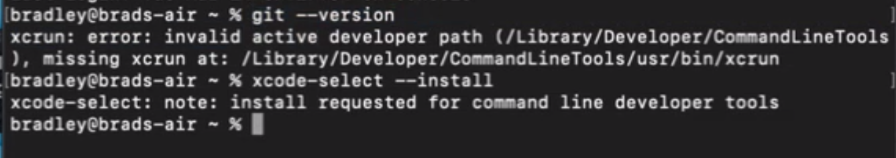
To fix this error you must run the following command in a terminal window on the Mac. Para corrigir este erro, você deve executar o seguinte comando em uma janela de terminal no Mac. Para corregir este error debe ejecutar el siguiente comando en una ventana de terminal en el Mac.
xcode-select --install
The other way to install these tools is to goto the Apple Developer software page and install from there: A outra forma de instalar essas ferramentas é acessar a página de software do Apple Developer e instalar a partir daí: La otra forma de instalar estas herramientas es ir a la página de software de Apple Developer e instalar desde allí: https://developer.apple.com/download/more/
Look for the: "Command Line Tools for Xcode" with the version number that matches your OS version number and does not contain the word 'BETA' as part of the filename. It will look something like this screenshot. Procure por: "Command Line Tools for Xcode" com o número de versão que corresponde ao número de versão do seu sistema operacional e que não contém a palavra 'BETA' no nome do arquivo. Vai parecer algo assim na captura de tela. Busque: "Command Line Tools for Xcode" con el número de versión que coincida con el número de versión de su sistema operativo y que no contenga la palabra 'BETA' como parte del nombre del archivo. Tendrá un aspecto similar a esta captura de pantalla.
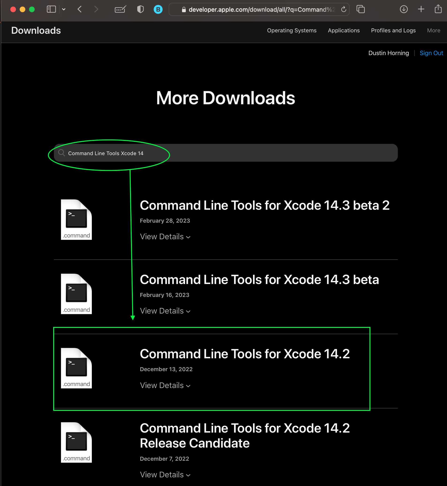
Once the software has been installed make sure to restart the VSCode application by clicking on the menu and select QUIT, (-q) Depois de instalar o software, certifique-se de reiniciar o aplicativo VSCode clicando no menu e selecionando QUIT, (-q) Una vez instalado el software, asegúrese de reiniciar la aplicación VSCode haciendo clic en el menú y seleccionando QUIT, (-q)
Back to Top Voltar ao Topo Volver arribaGit LoadLibraryExW() failed with "The specified procedure could not be found." Git LoadLibraryExW() falhou com "The specified procedure could not be found." Git LoadLibraryExW() falló con "The specified procedure could not be found."
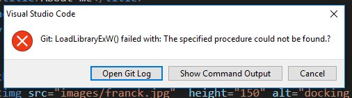
If you open the Show Command Output you will see the following error: git failed to load library libcurl-4.dll Se você abrir o Show Command Output você verá o seguinte erro: git failed to load library libcurl-4.dll Si abre Show Command Output verá el siguiente error: git failed to load library libcurl-4.dll
To resolve this error, you must find the libcurl-4.dll file on the system and make a copy of it to the C:\Program Files\Git\bin\ folder Para resolver este erro, você deve encontrar o arquivo libcurl-4.dll no sistema e fazer uma cópia para a pasta C:\Program Files\Git\bin\ Para resolver este error, debe encontrar el archivo libcurl-4.dll en el sistema y hacer una copia de él en la carpeta C:\Program Files\Git\bin\
for some reason even though Windows generally has the folder that this file can be found in the Path Environmental settings, Git does not always see it and cannot load it. Por algum motivo, embora o Windows geralmente tenha a pasta deste arquivo nas configurações de Path Environment, o Git nem sempre consegue localizá-lo e carregá-lo. Por alguna razón, aunque Windows generalmente tiene la carpeta donde se puede encontrar este archivo en la configuración del Path Environment, Git no siempre lo ve y no puede cargarlo.
Most Windows systems has this file located in C:\Windows and this folder is part of the Path setting on Windows computers. A maioria dos sistemas Windows tem este arquivo localizado em C:\Windows e esta pasta faz parte da configuração do Path nos computadores Windows. La mayoría de los sistemas Windows tienen este archivo ubicado en C:\Windows y esta carpeta es parte de la configuración del Path en computadoras Windows.
Back to Top Voltar ao Topo Volver arribaError You must install Git first Erro: você deve instalar o Git primeiro Error: debe instalar Git primero
This error may come up even after you have install the Git software. If that is the case follow these steps. Este erro pode aparecer mesmo depois de você ter instalado o software Git. Se for o caso, siga estes passos. Este error puede aparecer incluso después de haber instalado el software Git. Si ese es el caso, siga estos pasos.
Open the Extensions tab. Abra a aba Extensions. Abra la pestaña Extensions.
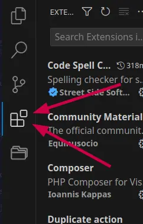
Click on the 3 dots in the top right corner. Clique nos 3 pontos no canto superior direito. Haga clic en los 3 puntos en la esquina superior derecha.
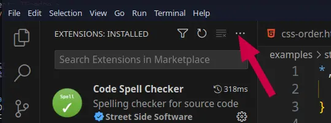
Select Views then Disabled extensions Selecione Views e depois Disabled extensions Seleccione Views y luego Disabled extensions
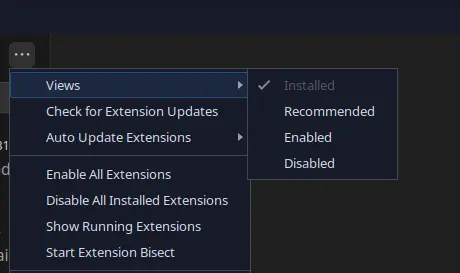
You will now see a new option in the extensions tab that says disabled. It should have a few extensions in there. You can make that area bigger by clicking on the bar that says DISABLED and then drag the top line of the box up. Você verá agora uma nova opção na aba de extensões que diz disabled. Deve ter algumas extensões lá. Você pode ampliar aquela área clicando na barra que diz DISABLED e arrastando a linha superior da caixa para cima. Ahora verá una nueva opción en la pestaña de extensiones que dice disabled. Debe tener algunas extensiones ahí. Puede hacer esa área más grande haciendo clic en la barra que dice DISABLED y luego arrastrando la línea superior del cuadro hacia arriba.
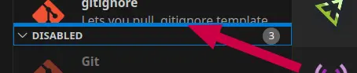
Click on Git and then in the right side editor click the enable button Clique em Git e depois no editor do lado direito clique no botão enable Haga clic en Git y luego en el editor del lado derecho haga clic en el botón enable
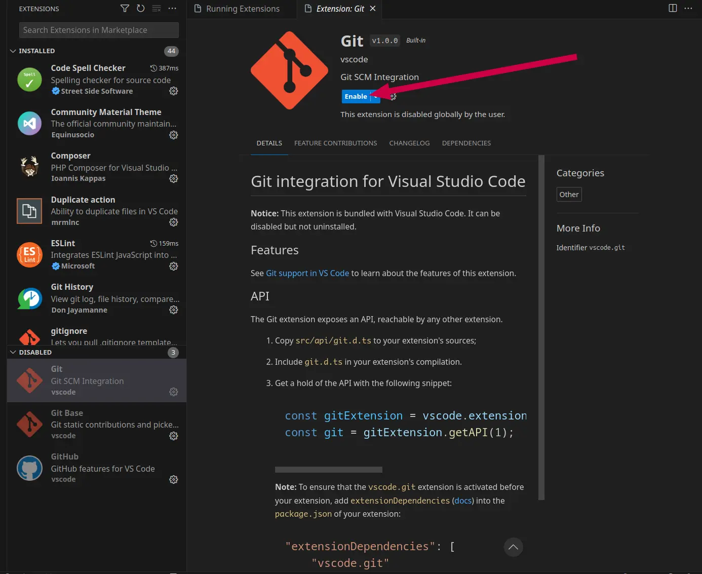
That will auto start Git and Git Base if disabled. If you have GitHub disabled as well, you will need to start that using the same process. Isso iniciará automaticamente o Git e o Git Base se estiverem desativados. Se o GitHub também estiver desativado, você precisará iniciá-lo usando o mesmo processo. Eso iniciará automáticamente Git y Git Base si están desactivados. Si GitHub también está desactivado, deberá iniciarlo usando el mismo proceso.
Back to Top Voltar ao Topo Volver arribaNever get the Web Page to log into GitHub to authorize Git/GitHub Nunca aparece a página da Web para fazer login no GitHub e autorizar o Git/GitHub Nunca aparece la página web para iniciar sesión en GitHub y autorizar Git/GitHub
If you never get the web page to open to authorize Git or GitHub use from within VSCode, you may have an issue with the default web browser setting on your computer. Se a página da web nunca abrir para autorizar o uso do Git ou GitHub a partir do VSCode, você pode ter um problema com a configuração do navegador padrão no seu computador. Si la página web nunca se abre para autorizar el uso de Git o GitHub desde VSCode, puede tener un problema con la configuración del navegador web predeterminado en su computadora.
Windows users: Usuários Windows: Usuarios de Windows:
- Install the browser of your choice, if you haven't already. Instale o navegador de sua escolha, se ainda não o fez. Instale el navegador de su elección, si aún no lo ha hecho.
- Open the Windows Start menu and click Settings. Abra o menu Iniciar do Windows e clique em Settings. Abra el menú Inicio de Windows y haga clic en Settings.
- Click on Apps and then Default Apps. Clique em Apps e depois em Default Apps. Haga clic en Apps y luego en Default Apps.
- Scroll down and select the current default browser under the "Web Browser" section. Role para baixo e selecione o navegador padrão atual na seção "Web Browser". Desplácese hacia abajo y seleccione el navegador predeterminado actual en la sección "Web Browser".
- Choose a new web browser from the list and click Set as Default. You may need to repeat this step for different file or link types. Escolha um novo navegador da lista e clique em Set as Default. Pode ser necessário repetir este passo para diferentes tipos de arquivo ou link. Elija un nuevo navegador de la lista y haga clic en Set as Default. Es posible que deba repetir este paso para diferentes tipos de archivos o enlaces.
MacOS Users: Usuários MacOS: Usuarios de MacOS:
- Download your preferred web browser. Baixe seu navegador preferido. Descargue su navegador web preferido.
- Install your browser. Double-click the downloaded DMG file Instale seu navegador. Dê duplo clique no arquivo DMG baixado Instale su navegador. Haga doble clic en el archivo DMG descargado
- Click the Apple logo in the top-left corner of the screen. Clique no logotipo da Apple no canto superior esquerdo da tela. Haga clic en el logotipo de Apple en la esquina superior izquierda de la pantalla.
- Click System Preferences… Clique em System Preferences… Haga clic en System Preferences…
- Click General Clique em General Haga clic en General
- Click the "Default web browser" drop-down box. Clique na caixa suspensa "Default web browser". Haga clic en el cuadro desplegable "Default web browser".
- Select a Default web browser Selecione um navegador padrão Seleccione un navegador web predeterminado
Linux Users Usuários Linux Usuarios de Linux
This command will show you what your current default web browser is: Este comando mostrará qual é o seu navegador padrão atual: Este comando le mostrará cuál es su navegador web predeterminado actual:
xdg-settings get default-web-browser
To set the default browser you will use this following format command. Change the firefox.desktop to the browser of your choice Para definir o navegador padrão você usará este formato de comando. Substitua firefox.desktop pelo navegador de sua escolha Para establecer el navegador predeterminado usará el siguiente formato de comando. Cambie firefox.desktop por el navegador de su elección
xdg-settings set default-web-browser firefox.desktop
Common browser name: Nomes de navegadores comuns: Nombres de navegadores comunes:
firefox.desktop, google-chrome.desktop, brave-browser.desktop, microsoft-edge.desktop, opera.desktop
Back to Top
Voltar ao Topo
Volver arriba
Github Pages Build process fails O processo de build do Github Pages falha El proceso de build de Github Pages falla
There are 2 potential reasons that have been identified with students. Há 2 razões potenciais identificadas com alunos. Hay 2 razones potenciales que se han identificado con los estudiantes.
User setup GitHub Pages incorrectly O usuário configurou o GitHub Pages incorretamente El usuario configuró GitHub Pages incorrectamente
To verify if this is the issue you need to look for this in the error log of the GitHub Pages publishing process. Para verificar se este é o problema, você precisa procurar no log de erros do processo de publicação do GitHub Pages. Para verificar si este es el problema, debe buscar esto en el registro de errores del proceso de publicación de GitHub Pages.
Step 1: Passo 1: Paso 1:
Go to the Actions tab of the repository Vá para a aba Actions do repository Vaya a la pestaña Actions del repository
Click on the pages build and deployment link next to the error icon Clique no link de build e implantação das pages ao lado do ícone de erro Haga clic en el enlace de build y despliegue de pages junto al ícono de error
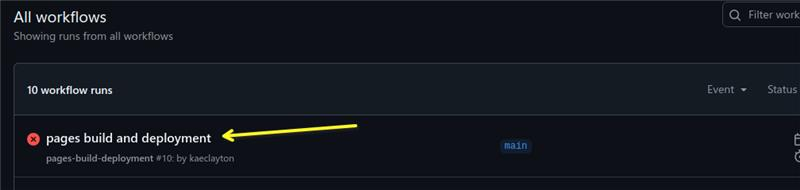
Then click on either option to see the error Depois clique em qualquer opção para ver o erro Luego haga clic en cualquier opción para ver el error
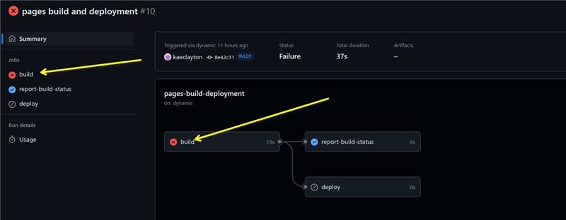
This is the error and the part that tells you what is wrong is at the end Este é o erro e a parte que diz o que está errado fica no final Este es el error y la parte que indica qué está mal está al final
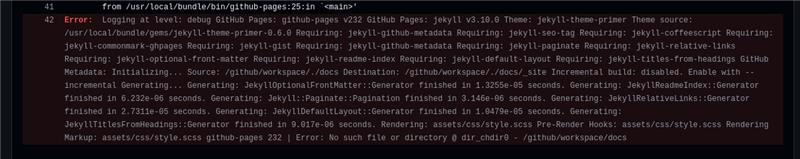
This is the error text you need to look for at the end of the message Este é o texto de erro que você deve procurar no final da mensagem Este es el texto de error que debe buscar al final del mensaje
Error: No such file or directory @ dir_chdir0 - /github/workspace/docs
What the student did was to change the folder in the GitHub Pages setup page. The student has something like this: O que o aluno fez foi alterar a pasta na página de configuração do GitHub Pages. O aluno tem algo assim: Lo que el estudiante hizo fue cambiar la carpeta en la página de configuración de GitHub Pages. El estudiante tiene algo como esto:
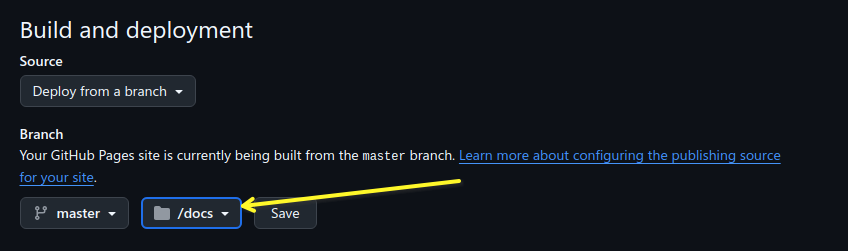
It must be the root folder like this. Deve ser a pasta raiz como esta. Debe ser la carpeta raíz como esta.
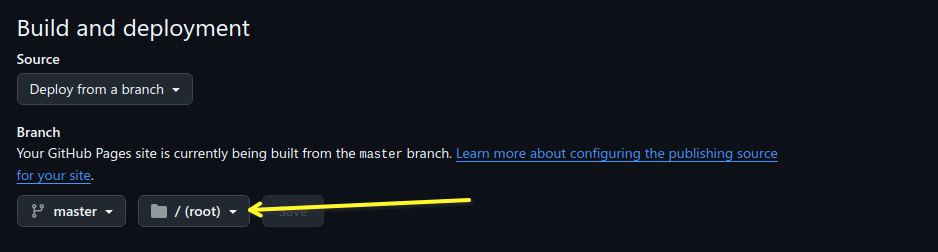
Once the user changes it to the root folder and saves the change, a new publishing process will start and it should publish if that is the only issue. Quando o usuário alterar para a pasta raiz e salvar a mudança, um novo processo de publicação começará e deve publicar se esse for o único problema. Una vez que el usuario lo cambie a la carpeta raíz y guarde el cambio, comenzará un nuevo proceso de publicación y debería publicar si ese es el único problema.
User creates a repository within a repository O usuário cria um repository dentro de outro repository El usuario crea un repository dentro de otro repository
This issue does occur and can occur if the student creates multiple repositories during the course. Este problema ocorre e pode ocorrer se o aluno criar múltiplos repositories durante o curso. Este problema ocurre y puede ocurrir si el estudiante crea múltiples repositories durante el curso.
You will first notice that your project did not build and if you look on the code page in GitHub, you will find the last commit message has a red X to the right of it. Você primeiro notará que seu projeto não compilou e se você olhar na página de código no GitHub, encontrará a última mensagem de commit com um X vermelho à direita. Primero notará que su proyecto no se compiló y si mira en la página de código en GitHub, encontrará que el último mensaje de commit tiene una X roja a la derecha.
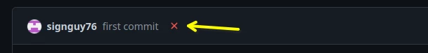
Click on the Red X and you will be presented with something that looks like this. Clique no X vermelho e você verá algo assim. Haga clic en la X roja y se le presentará algo como esto.
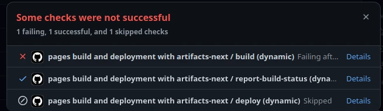
Click on the details option next to the item with the red X Clique na opção details ao lado do item com o X vermelho Haga clic en la opción details junto al elemento con la X roja
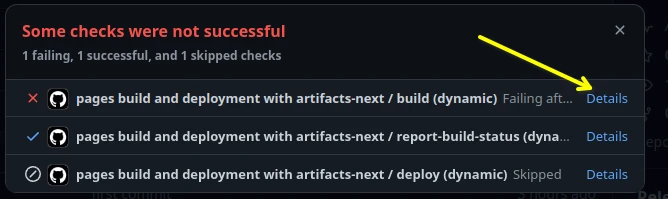
Look for the error lines. They start with the word Error: and are in red background color by default Procure as linhas de erro. Elas começam com a palavra Error: e têm fundo vermelho por padrão Busque las líneas de error. Comienzan con la palabra Error: y tienen fondo rojo por defecto
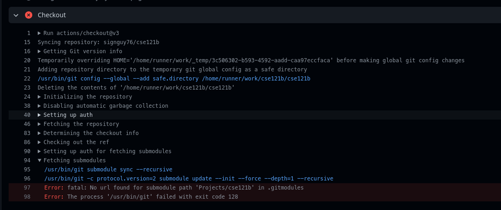
If the first line of the errors reads like this: Se a primeira linha dos erros for assim: Si la primera línea de los errores dice así:
"Error: fatal: No url found for submodule path <path to issue> in .gitmodules"
If you have this issue. You have a sub-folder that has also been initialized to be a git repository Se você tiver este problema, tem uma subpasta que também foi inicializada como um repository git Si tiene este problema, tiene una subcarpeta que también fue inicializada como un repository git
Another way to see this potential issue is to look at the code and look at the location in the error above. You should see a folder icon with an arrow pointing to the right next to the folder name like this Outra forma de ver este problema é olhar o código e a localização no erro acima. Você deve ver um ícone de pasta com uma seta apontando para a direita ao lado do nome da pasta Otra forma de ver este posible problema es mirar el código y la ubicación en el error anterior. Debe ver un ícono de carpeta con una flecha apuntando a la derecha junto al nombre de la carpeta
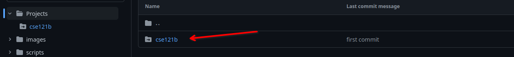
A third way to check this is in VSCode. Uma terceira forma de verificar é no VSCode. Una tercera forma de verificar esto es en VSCode.
To fix this you have to go into the sub-folder mentioned in the error and delete the hidden folder called .git Para corrigir isso você deve entrar na subpasta mencionada no erro e excluir a pasta oculta chamada .git Para corregir esto debe ir a la subcarpeta mencionada en el error y eliminar la carpeta oculta llamada .git
Easiest way to do this is within VSCode. Go to the source control area and click the 3 dots to the right of Source control A maneira mais fácil é dentro do VSCode. Vá para a área de source control e clique nos 3 pontos à direita de Source control La forma más fácil es dentro de VSCode. Vaya al área de source control y haga clic en los 3 puntos a la derecha de Source control

Select Views then click Source Control Repositories Selecione Views e depois clique em Source Control Repositories Seleccione Views y luego haga clic en Source Control Repositories
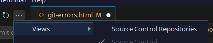
This will then show you all the repositories under the main folder that is open in VSCode. It will look something like this if there are more than 1. Isso mostrará todos os repositories sob a pasta principal que está aberta no VSCode. Parecerá algo assim se houver mais de 1. Esto le mostrará todos los repositories bajo la carpeta principal que está abierta en VSCode. Tendrá un aspecto similar a este si hay más de 1.
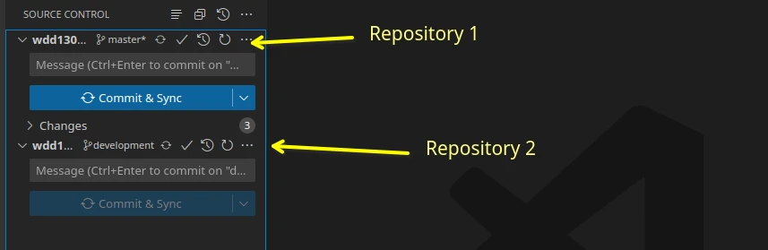
How to delete the second local repository. Como excluir o segundo repository local. Cómo eliminar el segundo repository local.
Use your file manager and go to the sub folder with the initialized repository. Make sure to turn on "Show Hidden Items" and look for the .git folder name and delete it. Do not delete the one in the root folder. Use seu gerenciador de arquivos e vá para a subpasta com o repository inicializado. Certifique-se de ativar "Show Hidden Items" e procure pelo nome da pasta .git e exclua-a. Não exclua a que está na pasta raiz. Use su administrador de archivos y vaya a la subcarpeta con el repository inicializado. Asegúrese de activar "Show Hidden Items" y busque el nombre de la carpeta .git y elimínela. No elimine la que está en la carpeta raíz.
For example: do not delete the wdd130/.git folder, but delete all other .git folders in sub folders under the wdd130 folder.
How to do this from command line/terminal using VSCode. Como fazer isso a partir da linha de comando/terminal usando VSCode. Cómo hacer esto desde la línea de comandos/terminal usando VSCode.
Windows Users Usuários Windows Usuarios de Windows
Option 1: Opção 1: Opción 1:
- open terminal abra o terminal abra el terminal
- Change the terminal type to Git Bash by clicking on the chevron pointing down next to the Plus sign Mude o tipo de terminal para Git Bash clicando no chevron apontando para baixo ao lado do sinal de Mais Cambie el tipo de terminal a Git Bash haciendo clic en el chevron apuntando hacia abajo junto al signo de Más
-
Change folder to the folder with the second repository. For example using the image above:
Mude para a pasta com o segundo repository. Por exemplo, usando a imagem acima:
Cambie a la carpeta con el segundo repository. Por ejemplo, usando la imagen anterior:
cd cse210b
-
Type the following command:
Digite o seguinte comando:
Escriba el siguiente comando:
rm .git -rf
Option 2: Opção 2: Opción 2:
- open terminal. It will default to Powershell abra o terminal. Vai abrir como Powershell por padrão abra el terminal. Se abrirá como Powershell de manera predeterminada
-
Change folder to the folder with the second repository. For example using the image above:
Mude para a pasta com o segundo repository. Por exemplo, usando a imagem acima:
Cambie a la carpeta con el segundo repository. Por ejemplo, usando la imagen anterior:
cd cse210b
-
Type the following command:
Digite o seguinte comando:
Escriba el siguiente comando:
Remove-Item -Recurse -Force .git
Mac and Linux users Usuários Mac e Linux Usuarios de Mac y Linux
- open terminal abra o terminal abra el terminal
-
Change folder to the folder with the second repository. For example using the image above:
Mude para a pasta com o segundo repository. Por exemplo, usando a imagem acima:
Cambie a la carpeta con el segundo repository. Por ejemplo, usando la imagen anterior:
cd cse210b
-
Type the following command for Git Bash:
Digite o seguinte comando para Git Bash:
Escriba el siguiente comando para Git Bash:
rm .git -rf
Once done commit and sync with GitHub so that the build process can be re-initialized Depois faça commit e sync com o GitHub para que o processo de build possa ser reinicializado Una vez hecho, haga commit y sync con GitHub para que el proceso de build pueda reinicializarse
You get the following error: fatal: Unable to access 'git repository url': OpenSSL SSL_read: SSL_ERROR_SYSCALL, erro 0 Você recebe o seguinte erro: fatal: Unable to access 'git repository url': OpenSSL SSL_read: SSL_ERROR_SYSCALL, erro 0 Recibe el siguiente error: fatal: Unable to access 'git repository url': OpenSSL SSL_read: SSL_ERROR_SYSCALL, error 0
This error is due to some SSL connectivity issue between your computer and GitHub. There are a variety of reasons why you will get this message. Este erro é devido a algum problema de conectividade SSL entre seu computador e o GitHub. Há uma variedade de razões pelas quais você receberá esta mensagem. Este error se debe a algún problema de conectividad SSL entre su computadora y GitHub. Hay una variedad de razones por las que recibirá este mensaje.
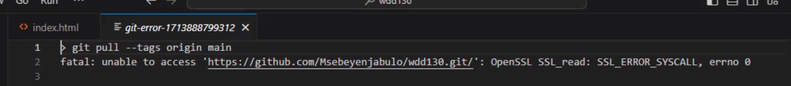
The easiest way to fix this is to re-install/update Git. Go to git-scm.com and download and install the software. A maneira mais fácil de corrigir isso é reinstalar/atualizar o Git. Acesse git-scm.com e baixe e instale o software. La forma más fácil de corregir esto es reinstalar/actualizar Git. Vaya a git-scm.com y descargue e instale el software.
Windows computers You can update using one of two methods Computadores Windows Você pode atualizar usando um de dois métodos Computadoras Windows Puede actualizar usando uno de dos métodos
-
Run this command in a CMD prompt on Windows:
Execute este comando no prompt CMD no Windows:
Ejecute este comando en un símbolo CMD en Windows:
git update-git-for-windows
- Download the files and run the installer manually. You can get the installation instructions here: Download for Windows Baixe os arquivos e execute o instalador manualmente. Você pode obter as instruções de instalação aqui: Download para Windows Descargue los archivos y ejecute el instalador manualmente. Puede obtener las instrucciones de instalación aquí: Download for Windows (Solo en inglés)
Mac Computers Apple supplies the version of Git to run through the XCode software. You must check for software updates for your Mac and install those updates. This is done through the App Store on the Mac. It is a good idea to install all those updates on a regular basis. You can get all the instructions for Mac here: Downloads for macOS Computadores Mac A Apple fornece a versão do Git para executar através do software XCode. Você deve verificar atualizações de software para o seu Mac e instalar essas atualizações. Isso é feito pela App Store no Mac. É uma boa ideia instalar todas essas atualizações regularmente. Você pode obter todas as instruções para Mac aqui: Downloads para macOS Computadoras Mac Apple proporciona la versión de Git para ejecutar a través del software XCode. Debe verificar las actualizaciones de software para su Mac e instalar esas actualizaciones. Esto se hace a través de la App Store en el Mac. Es una buena idea instalar todas esas actualizaciones regularmente. Puede obtener todas las instrucciones para Mac aquí: Downloads for macOS (Solo en inglés)
Linux Computers If you install the Git software correctly, you should only need to use your package manager and run the update command to get the most recent updates. You can get all the install commands for the various Linux Distributions here: Downloads for Linux Computadores Linux Se você instalar o software Git corretamente, você só precisará usar seu gerenciador de pacotes e executar o comando de atualização para obter as atualizações mais recentes. Você pode obter todos os comandos de instalação para as várias distribuições Linux aqui: Downloads para Linux Computadoras Linux Si instala el software Git correctamente, solo necesitará usar su administrador de paquetes y ejecutar el comando de actualización para obtener las actualizaciones más recientes. Puede obtener todos los comandos de instalación para las diversas distribuciones de Linux aquí: Downloads for Linux (Solo en inglés)
You do need to update Git at least every 4 months, sometime sooner. Git releases updates to the major point release about every 2 to 3 months with bug fixes randomly within that timeframe. Você precisa atualizar o Git pelo menos a cada 4 meses, às vezes antes. O Git lança atualizações para a versão principal a cada 2 a 3 meses com correções de bugs aleatoriamente dentro desse prazo. Debe actualizar Git al menos cada 4 meses, a veces antes. Git lanza actualizaciones a la versión principal aproximadamente cada 2 a 3 meses con correcciones de errores de manera aleatoria dentro de ese período.
As of when this was written, this table shows the last 3 major point releases with the bug fixes. No momento em que isso foi escrito, esta tabela mostra as últimas 3 versões principais com as correções de bugs. Al momento de escribir esto, esta tabla muestra las últimas 3 versiones principales con las correcciones de errores.
| VersionVersãoVersión | Release DateData de LançamentoFecha de Lanzamiento |
|---|---|
| 2.43.0 | Nov 20, 2023 |
| 2.43.1 | Feb 9, 2024 |
| 2.43.2 | Feb 14, 2024 |
| 2.43.3 | Feb 23, 2024 |
| 2.44.0 | Feb 23, 2024 |
| 2.45.0 | April 29, 2024 |
These are suggestions and hints Estas são sugestões e dicas Estas son sugerencias y consejos
User is prompted to configure formatter O usuário é solicitado a configurar o formatador Se solicita al usuario que configure el formateador
User is prompted to configure formatter O usuário é solicitado a configurar o formatador Se solicita al usuario que configure el formateador
If the user installs the Prettier extension, which is not needed, the first time they go to format the code, they will be prompted to select a formatter for that type of file type (HTML or CSS). VSCode has a code formatter built into the editor that works well with HTML, CSS, JavaScript, and PHP. Se o usuário instalar a extensão Prettier, que não é necessária, na primeira vez que formatar o código, será solicitado que selecione um formatador para aquele tipo de arquivo (HTML ou CSS). O VSCode possui um formatador de código integrado ao editor que funciona bem com HTML, CSS, JavaScript e PHP. Si el usuario instala la extensión Prettier, que no es necesaria, la primera vez que vaya a formatear el código, se le pedirá que seleccione un formateador para ese tipo de archivo (HTML o CSS). VSCode tiene un formateador de código integrado en el editor que funciona bien con HTML, CSS, JavaScript y PHP.
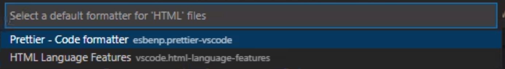
One of the issues with the Prettier formatter is that it closes null tags. What this means is that tags such as the img tag will be closed with > at the end. This is XHTML syntax and not part of HTML5 standards. Um dos problemas com o formatador Prettier é que ele fecha tags nulas. Isso significa que tags como a tag img serão fechadas com > no final. Esta é a sintaxe XHTML e não faz parte dos padrões HTML5. Uno de los problemas con el formateador Prettier es que cierra las etiquetas nulas. Esto significa que etiquetas como la etiqueta img se cerrarán con > al final. Esta es la sintaxis XHTML y no forma parte de los estándares HTML5.
Prettier is what is known as an Opinionated Formatter. It is opinionated in that the creators of it are stating what they believe is the best way to format something even if it goes against the standards or not explicitly stated that this is the way it must be done. They do not give you the option to turn that off. VSCode setting does give you that option. Prettier é o que se conhece como um Formatador Opinativo. É opinativo pois os criadores estão afirmando o que acreditam ser a melhor forma de formatar algo, mesmo que vá contra os padrões ou não seja explicitamente declarado que esta é a forma correta. Eles não dão a opção de desativar isso. A configuração do VSCode dá essa opção. Prettier es lo que se conoce como un Formateador Opinado. Es opinado en el sentido de que los creadores están afirmando lo que creen que es la mejor manera de formatear algo, incluso si va en contra de los estándares o no se declara explícitamente que esta es la forma en que debe hacerse. No dan la opción de desactivar eso. La configuración de VSCode sí le da esa opción.
Back to Top Voltar ao Topo Volver arribaPushing to GitHub using fewer steps Fazendo push para o GitHub com menos passos Hacer push a GitHub con menos pasos
When you are on the Git tab in VSCode, the button to Commit and Sync may state Commit only. If you click on the down arrow to the right of the button and select Commit & Sync Quando você está na aba Git no VSCode, o botão de Commit and Sync pode dizer apenas Commit. Se você clicar na seta para baixo à direita do botão e selecionar Commit & Sync Cuando está en la pestaña Git en VSCode, el botón de Commit and Sync puede decir solo Commit. Si hace clic en la flecha hacia abajo a la derecha del botón y selecciona Commit & Sync
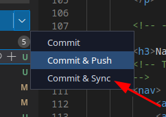
If this is the first time you are doing that you should see the following messages. On the first dialog, click the Always button Se esta for a primeira vez que você faz isso, você deve ver as seguintes mensagens. No primeiro diálogo, clique no botão Always Si esta es la primera vez que hace esto, debería ver los siguientes mensajes. En el primer diálogo, haga clic en el botón Always
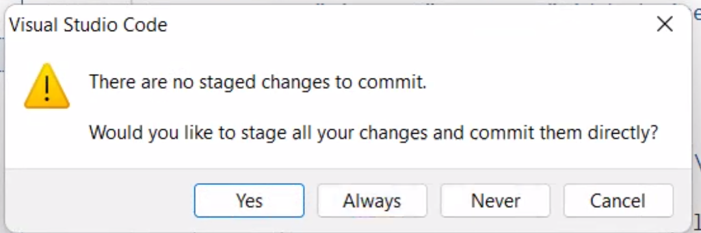
On this next dialog if you get prompted, click the OK, Don't Show Again button Neste próximo diálogo, se solicitado, clique no botão OK, Don't Show Again En este siguiente diálogo, si se le solicita, haga clic en el botón OK, Don't Show Again
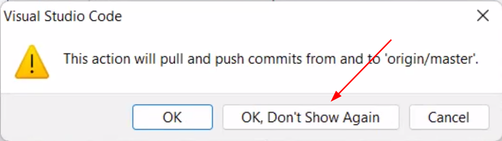
Sometimes these will prompt the second time you click on the Commit & Sync option. Às vezes estes aparecerão na segunda vez que você clicar na opção Commit & Sync. A veces estos aparecerán la segunda vez que haga clic en la opción Commit & Sync.
You can change your Commit button to say Commit & Sync by doing the following Você pode mudar seu botão de Commit para dizer Commit & Sync fazendo o seguinte Puede cambiar su botón de Commit para que diga Commit & Sync haciendo lo siguiente
- Go to the VSCode Settings Vá para VSCode Settings Vaya a VSCode Settings
-
In the search bar search for Git: Post Commit Command
Na barra de pesquisa, pesquise por Git: Post Commit Command
En la barra de búsqueda, busque Git: Post Commit Command
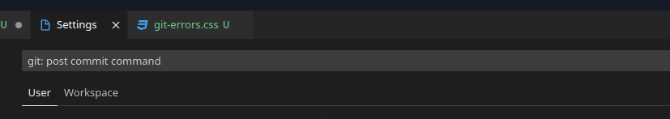
-
Change the option on that command to be sync
Altere a opção nesse comando para sync
Cambie la opción en ese comando a sync
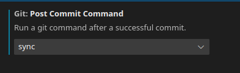
This will make it possible for you to click the button once and commit and sync at the same time. Just click this button and both steps are executed in order. Isso tornará possível clicar no botão uma vez e fazer commit e sync ao mesmo tempo. Basta clicar neste botão e os dois passos são executados em ordem. Esto hará posible hacer clic en el botón una vez y hacer commit y sync al mismo tiempo. Solo haga clic en este botón y ambos pasos se ejecutan en orden.
Back to Top Voltar ao Topo Volver arribaAdding a description to your repository Adicionando uma descrição ao seu repository Agregar una descripción a su repository
One of the things you will see in a lot of repositories is a description of what the repository is all about, how to install and use the code, etc. Uma das coisas que você verá em muitos repositories é uma descrição sobre o que o repository se trata, como instalar e usar o código, etc. Una de las cosas que verá en muchos repositories es una descripción de lo que trata el repository, cómo instalar y usar el código, etc.
This is all done using Markdown text. This will show you the details of how to use that so you can describe what your repository is all about. Tudo isso é feito usando texto Markdown. Isso mostrará os detalhes de como usar isso para que você possa descrever do que se trata o seu repository. Todo esto se hace usando texto Markdown. Esto le mostrará los detalles de cómo usar eso para que pueda describir de qué trata su repository.
First you need to create a file in the top level folder called README.md. It must be capitalized for GitHub to recognize it as the description file for the repository Primeiro você precisa criar um arquivo na pasta de nível superior chamado README.md. Ele deve estar em maiúsculas para o GitHub reconhecê-lo como o arquivo de descrição do repository Primero debe crear un archivo en la carpeta de nivel superior llamado README.md. Debe estar en mayúsculas para que GitHub lo reconozca como el archivo de descripción del repository
The following information comes from the Markdown Guide website basic syntax page. As informações a seguir vêm da página de sintaxe básica do site Markdown Guide (somente em inglês). La siguiente información proviene de la página de sintaxis básica del sitio web Markdown Guide. (Solo en inglés)
The basic syntax is as follows: A sintaxe básica é a seguinte: La sintaxis básica es la siguiente:
| Markdown | HTML | Rendered OutputResultado RenderizadoResultado Renderizado |
|---|---|---|
# Heading level 1
|
<h1>Heading level 1</h1>
|
Heading level 1 |
## Heading level 2
|
<h2>Heading level 2</h2>
|
Heading level 2 |
### Heading level 3
|
<h3>Heading level 3</h3>
|
Heading level 3 |
#### Heading level 4
|
<h4>Heading level 4</h4>
|
Heading level 4 |
##### Heading level 5
|
<h5>Heading level 5</h5>
|
Heading level 5 |
###### Heading level 6
|
<h6>Heading level 6</h6>
|
Heading level 6 |
This is regular paragraph text
|
<p>This is regular paragraph text</p>
|
This is regular paragraph text |
Heading Best Practices Melhores Práticas para Títulos Mejores Prácticas para Títulos
Markdown applications don't agree on how to handle a missing space between the number signs ( # ) and the heading name. For compatibility, always put a space between the number signs and the heading name.
As aplicações Markdown não concordam em como lidar com um espaço faltando entre os sinais de número ( # ) e o nome do título. Para compatibilidade, sempre coloque um espaço entre os sinais de número e o nome do título.
Las aplicaciones Markdown no están de acuerdo en cómo manejar un espacio faltante entre los signos de número ( # ) y el nombre del título. Para compatibilidad, siempre ponga un espacio entre los signos de número y el nombre del título.
| Do thisFaça assimHaga esto | Don't do thisNão faça assimNo haga esto |
|---|---|
# Here's a Heading
|
#Here's a Heading
|
You should also put blank lines before and after a heading for compatibility. Você também deve colocar linhas em branco antes e depois de um título para compatibilidade. También debe poner líneas en blanco antes y después de un título para compatibilidad.
| Do thisFaça assimHaga esto | Don't do thisNão faça assimNo haga esto |
|---|---|
Try to put a blank line before...
|
Without blank lines, this might not look right.
|
Paragraphs Parágrafos Párrafos
To create paragraphs, use a blank line to separate one or more lines of text. Para criar parágrafos, use uma linha em branco para separar uma ou mais linhas de texto. Para crear párrafos, use una línea en blanco para separar una o más líneas de texto.
| Markdown | HTML | Rendered OutputResultado RenderizadoResultado Renderizado |
|---|---|---|
I really like using Markdown.
|
<p>I really like using Markdown.</p>
|
I really like using Markdown. I think I'll use it to format all of my documents from now on. |
Paragraph Best Practices Melhores Práticas para Parágrafos Mejores Prácticas para Párrafos
Unless the paragraph is in a list, don't indent paragraphs with spaces or tabs. A menos que o parágrafo esteja em uma lista, não indente parágrafos com espaços ou tabulações. A menos que el párrafo esté en una lista, no indente los párrafos con espacios o tabulaciones.
| Do thisFaça assimHaga esto | Don't do thisNão faça assimNo haga esto |
|---|---|
Don't put tabs or spaces in front of your paragraphs.
|
This can result in unexpected
formatting problems.
|
How to share a computer to commit to GitHub using different accounts Como compartilhar um computador para fazer commit no GitHub usando contas diferentes Cómo compartir una computadora para hacer commit en GitHub usando diferentes cuentas
This process is quite easy. Go to the command prompt/terminal for the root of the project. Then type these commands. Este processo é bastante simples. Vá para o terminal na raiz do projeto. Depois digite estes comandos. Este proceso es bastante sencillo. Vaya al símbolo del sistema/terminal en la raíz del proyecto. Luego escriba estos comandos.
You will notice that you have already typed these commands with the global option. These commands sets these for the specific repository only. Você notará que já digitou esses comandos com a opção global. Esses comandos configuram apenas para o repository específico. Notará que ya ha escrito estos comandos con la opción global. Estos comandos configuran solo para el repository específico.
git config user.email "email"
git config user.name "github username"
You can check your Git settings with: git config user.name && git config user.email Você pode verificar suas configurações do Git com: git config user.name && git config user.email Puede verificar su configuración de Git con: git config user.name && git config user.email
on some systems you will have to run a second command in the terminal em alguns sistemas você terá que executar um segundo comando no terminal en algunos sistemas tendrá que ejecutar un segundo comando en el terminal
git commit --amend --reset-author --no-edi
You can also do this manually in the .git/config file found in a hidden sub-folder under the root folder of the repository. Você também pode fazer isso manualmente no arquivo .git/config encontrado em uma subpasta oculta sob a pasta raiz do repository. También puede hacer esto manualmente en el archivo .git/config que se encuentra en una subcarpeta oculta bajo la carpeta raíz del repository.
Add the following line to the end. Make sure to keep the indentation. It must match what is already in use in your file. Adicione a seguinte linha ao final. Certifique-se de manter a indentação. Ela deve corresponder ao que já está em uso no seu arquivo. Agregue la siguiente línea al final. Asegúrese de mantener la indentación. Debe coincidir con lo que ya está en uso en su archivo.
[user]Back to Top Voltar ao Topo Volver arriba
name = YourName
email = your@email.com
How to add a quick link to your GitHub Pages URL Como adicionar um link rápido para o URL do seu GitHub Pages Cómo agregar un enlace rápido al URL de su GitHub Pages
Log into your repository on GitHub. Then click on the cog icon to the right of the word About. Faça login no seu repository no GitHub. Depois clique no ícone de engrenagem à direita da palavra About. Inicie sesión en su repository en GitHub. Luego haga clic en el ícono de engranaje a la derecha de la palabra About.
Click the checkbox for "Use your GitHub Pages website". Marque a caixa de seleção "Use your GitHub Pages website". Marque la casilla de verificación "Use your GitHub Pages website".
You can add tags to your repository such as HTML5, CSS3, School work, etc. You decide what topics you want to use. Você pode adicionar tags ao seu repository, como HTML5, CSS3, trabalho escolar, etc. Você decide quais tópicos quer usar. Puede agregar etiquetas a su repository como HTML5, CSS3, trabajo escolar, etc. Usted decide qué temas quiere usar.
It is also recommended to uncheck the Releases and Packages checkbox's. We do not create a release or a package in this class. Those are for code repositories where you are releasing code as software to download and use on a computer or in another program. Também é recomendado desmarcar as caixas de Releases e Packages. Não criamos um release ou um pacote nesta aula. Esses são para repositories de código onde você está lançando código como software para download e uso em um computador ou em outro programa. También se recomienda desmarcar las casillas de Releases y Packages. No creamos un release ni un paquete en esta clase. Esos son para repositories de código donde está lanzando código como software para descargar y usar en una computadora o en otro programa.
You can click the save button at the bottom of the modal and then you will see the link to your GitHub Pages website on your repository page. Você pode clicar no botão save na parte inferior do modal e então verá o link para seu site GitHub Pages na sua página de repository. Puede hacer clic en el botón save en la parte inferior del modal y luego verá el enlace a su sitio web de GitHub Pages en su página de repository.